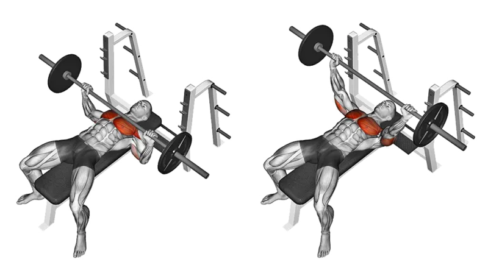
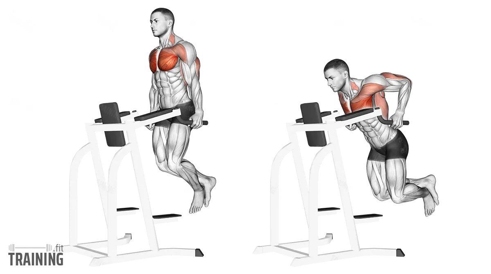
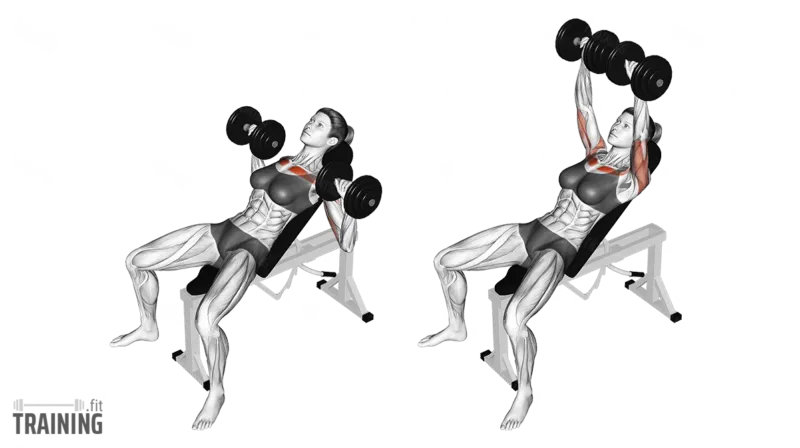
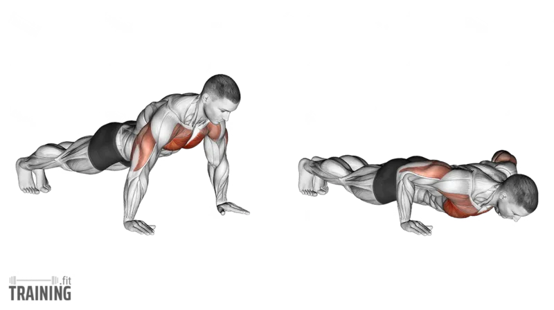

Exercise 01
Incline Bench Press
Targets the upper chest, while also working the front shoulders and triceps.

Form
- Set the bench at about 30–45 degrees
- Keep your feet flat on the floor
- Lower the bar to your upper chest
- Press the weight up without locking out too hard
- Keep your shoulder blades pulled back
Sets & Reps
Growth
3–4 × 8–12
Strength
4–5 × 4–6
Endurance
2–3 × 12–15
Tip: Do not flare your elbows too wide. Keep them slightly tucked to protect your shoulders.
Fact: Incline pressing emphasizes the clavicular head of the chest, which helps build that fuller upper-chest look.
Exercise 02
Dips
Mainly works the lower chest, triceps, and front shoulders.

Form
- Grip the bars firmly
- Keep your chest up
- Lean slightly forward for more chest activation
- Lower yourself until your upper arms are about parallel to the floor
- Push back up in control
Sets & Reps
Bodyweight
3–4 × 6–12
Beginners
3 × 5–8
Advanced
4 × 6–10 +weight
Tip: If dips hurt your shoulders, do not go too deep. Only lower to a range you can control safely.
Fact: A more upright torso makes dips more triceps-focused, while a forward lean makes them more chest-focused.
Exercise 03
Incline Dumbbell Press
Trains the upper chest, front delts, and triceps while improving left-to-right balance.

Form
- Set the bench to 30–45 degrees
- Start with dumbbells at chest level
- Keep wrists straight
- Press up and slightly inward
- Lower slowly until you feel a stretch in the chest
- Keep your shoulders down and back
Sets & Reps
Growth
3–4 × 8–12
Strength
4 × 6–8
Burnout
2–3 × 12–15
Tip: Do not smash the dumbbells together at the top. Focus on squeezing the chest, not just moving weight.
Fact: Dumbbells usually give you a greater range of motion than a barbell, which can help with chest development.
Exercise 04
Push-Ups
Works the chest, triceps, shoulders, and core — anytime, anywhere.

Form
- Keep your hands slightly wider than shoulder-width
- Keep your body in a straight line
- Tighten your core and glutes
- Lower your chest toward the floor
- Push back up without letting your hips sag
Sets & Reps
Beginners
3 × 8–12
General
3–4 × 12–20
Advanced
3–4 × weighted
Tip: Do not let your lower back drop. Keep your core tight the whole time.
Fact: Push-ups are not just a chest exercise — they are also a great core stability movement.
Best Use of All 4 Together
If your goal is chest growth, follow this order:
Incline Bench Press — 3–4 sets
Incline Dumbbell Press — 3–4 sets
Dips — 3 sets
Push-Ups — 2–3 sets to near failure
This gives you a strong mix of upper chest, lower chest, and overall pressing volume.